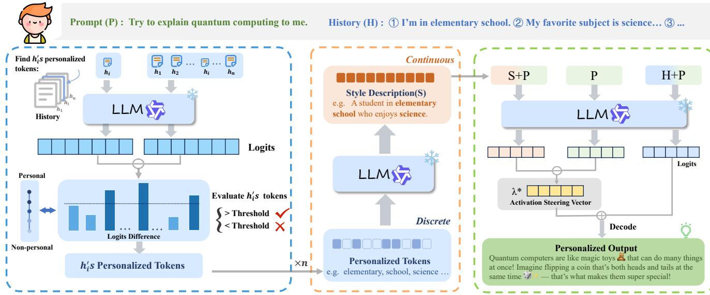
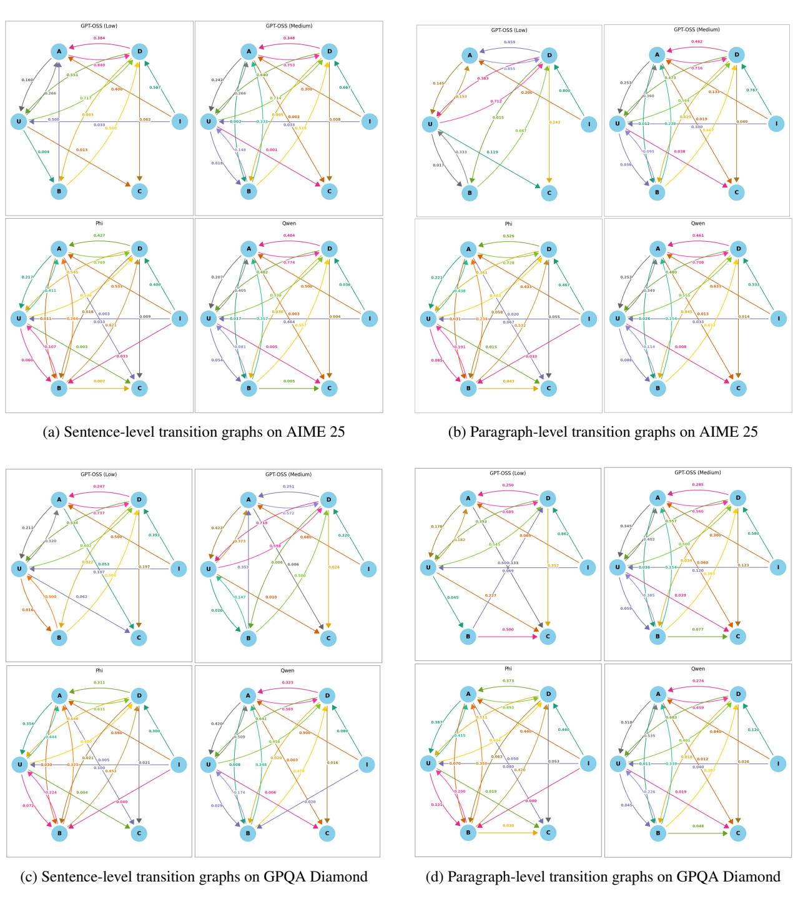
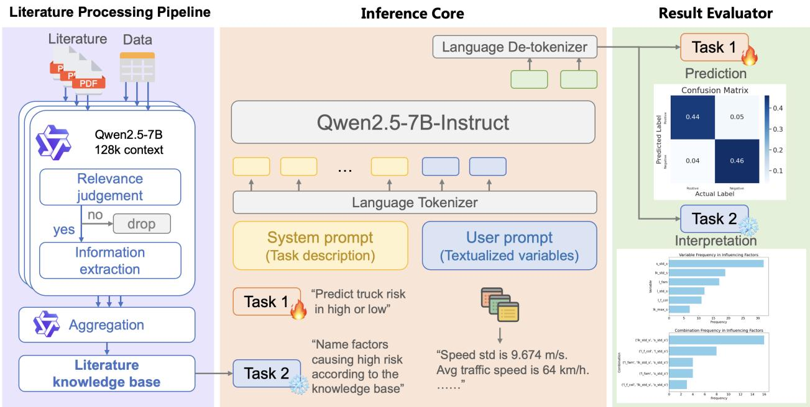

📝 微观深度解读
2025-11-01
为您精选了 6 篇高质量 AI 论文的深度解读
检索增强生成(RAG)
大型语言模型(LLM)
计算机科学教育
多模态学习
教育AI助手
推荐分数: 0.542
📖 简介：本文提出了一种结合大学课程材料的检索增强生成（RAG）方法，以提升大型语言模型（LLM）在计算机科学教育中的表现。通过比较RAG与持续预训练（CPT），研究发现RAG在处理小规模专业数据时更有效，尤其是多模态RAG利用幻灯片图像显著提高了回答准确性。这为教育领域的AI助手开发提供了实用策略。

大语言模型(LLM)
个性化
因果推断
激活引导
用户偏好
推荐分数: 0.484
📖 简介：本文提出了SteerX，一种基于因果推断的激活引导方法，旨在提升大语言模型（LLM）的个性化效果。SteerX通过解耦用户历史数据中的偏好驱动成分，生成更精准的激活引导向量，从而改善模型输出的相关性和质量。实验结果表明，SteerX在多个任务上显著优于现有方法，提供了一种有效的个性化解决方案。

查看详细解读 →
大型推理模型(LRM)
思维链推理(CoT)
有限状态机(FSM)
推理策略
推理能力
推荐分数: 0.475
📖 简介：本文提出了一种基于有限状态机（FSM）的框架，用于系统性分析大型推理模型（LRMs）的思维链（CoT）推理过程。通过定义离散的推理状态并标注推理轨迹，研究揭示了不同模型在推理策略上的显著差异，提供了一种新的工具来理解和改进LLMs的推理能力。

查看详细解读 →
大型语言模型(LLMs)
文本比较
错误估计
Copeland排名
性能分析
推荐分数: 0.473
📖 简介：本文提出了一种新方法，通过成对文本比较量化大型语言模型（LLMs）的输出错误，解决了在缺乏真实标签的情况下估计错误概率的问题。该方法分析了均匀错误率和位置偏差，并利用Copeland排名揭示了基于比较的排名方法的可扩展性限制。实验结果显示，Claude模型在不同文本类型和提示下表现最佳，提供了对LLMs性能的重要见解。

动态模式引导
大语言模型(LLMs)
推理算法
逻辑一致性
事实准确性
推荐分数: 0.467
📖 简介：本文提出了一种名为动态模式引导（DMS）的推理时算法，旨在解决大语言模型（LLMs）在复杂推理任务中表现出的不可靠性。DMS通过实时识别模型的记忆依赖，并动态引导其计算路径向更可靠的泛化模式转变，从而显著提高逻辑一致性和事实准确性。实验结果表明，DMS在多个基准测试中优于现有方法，增强了LLMs的可靠性。

可解释性
风险预测
大型语言模型(LLM)
微调
交通安全管理
推荐分数: 0.393
📖 简介：本文提出了一种名为LIFT（Literature-Informed Fine-Tuning）LLM的可解释预测框架，旨在解决卡车驾驶风险预测中的可解释性和准确性问题。通过自动构建领域知识库并微调大型语言模型，LIFT LLM在真实数据集上实现了显著的性能提升，召回率提高26.7%，F1分数提高10.1%。该框架有效识别关键风险变量及其组合，提供稳定的解释，支持交通安全管理决策。

查看详细解读 →